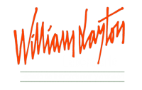

Formación
Joseline Coronel ha forjado su carrera artística a través de una formación constante y diversa en el mundo de las artes escénicas. Su trayectoria comenzó en su infancia, cuando asistía a La escuela de Música, danza y teatro de su pueblo, donde descubrió su pasión por la interpretación. Posteriormente, decidió comenzar con su formación profesional dentro del mundo artístico donde ha ido creciendo a cada paso que ha dado, en:
- Cine y Cultura en la Universidad de Córdoba (Lo que le permitió ampliar su visión artística).
- Laboratorio William Layton.
- Escuela de Teatro Ataria.
- Actuación frente a cámara. Ricardo A. Solla.
- Voz, Palabra y Verso. Vicente Fuentes (Fuentes de la Voz).
Consolidando su técnica vocal y expresiva. Su formación integral refleja su dedicación al arte y su deseo de evolucionar como actriz en cada etapa de su carrera.
